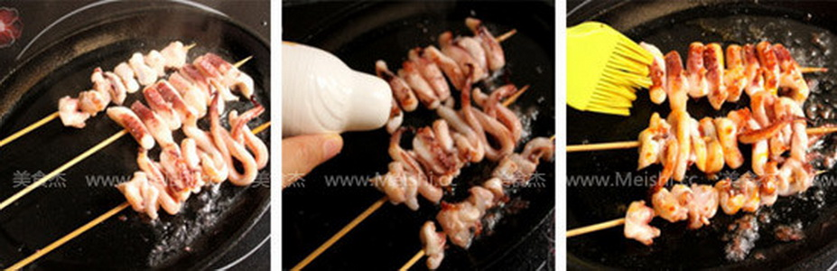
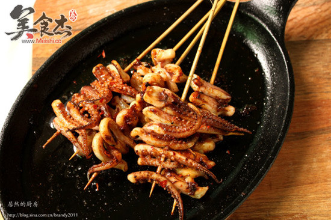
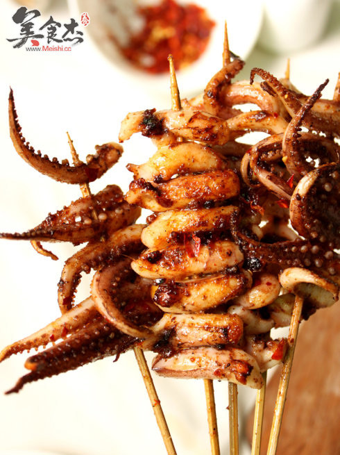

- 让做饭成为一种艺术
- 铁板鱿鱼
- 工艺： 煎
- 口味： 香辣味
- 烹饪时间：<15分钟
- 这一盘就是你减肥路上的最大阻力
铁板鱿鱼
-
没有铁板在家能吃到美味的烤鱿鱼不？——可以滴~平底锅、烤箱神马的一样解决问题~把腌制好的鱿鱼丢到足够热的平底锅里，立刻滋啦作响，鱿鱼开始打卷，再用锅铲反复按压鱿鱼串，铁板的效果马上就出来了切片的时候不要切得太小，鱿鱼加热回缩比较严重~想要吃的肉肉的口感，那就选只个头稍大的~为了腌制时更入味，吃的时候更方便那就切片穿串，想要来点豪爽的，就把整条鱿鱼对分，半片鱿鱼直接穿串也不错~10分钟的烤鱿鱼，烧烤季必备~
-
鱿鱼 两个 食盐 1茶匙 姜 3片 料酒 1汤匙 植物油 少许 海鲜酱 1汤匙 辣椒粉 1茶匙 孜然粉 1茶匙
做法：
- 鱿鱼须清理干净，用刀分成一根根
- 锅里烧开水，放入姜片，倒入料酒，放入鱿鱼须焯水变色即可捞出沥干水
- 鱿鱼须按照大小差不多的用竹签串成一串串
- 平底铸铁锅预热，放入少许植物油，中小火，放入鱿鱼须(最好用铸铁锅，我试过用一边的平底锅，出来的模样也不差，但是味道确实不如铸铁锅来的地道)
- 鱿鱼须一面煎香后翻面(其实平时一次可以煎6串的，不过为了不妨碍拍照，我就分开煎啦)，同时撒点盐，盐可以多一点点，因为会掉落锅里的
- 抹一匙海鲜酱，不要贪多，多了遮盖了鱿鱼的香味，若没有海鲜酱的，可以随便用点老干妈什么的，主要是为了遮盖鱿鱼的腥味
- 接下来就是辣椒粉和孜然粉，根据自己的喜好多多的加吧哈，记得中途的鱿鱼须必须要像街头的老板一样不停翻动咯，鱿鱼是越煎越香的呢
- 焦香程度达到自己喜欢时候就可以出锅享用啦，新鲜热辣呢，注意别烫到嘴巴咯  


烹饪技巧：
- 1、鱿鱼洗干净后，放入加了几滴清水的盆里，浸泡半个小时后，很容易把表皮撕下来。
- 2、鱿鱼采用高温快速烘烤，以免水分流失太多影响口感。